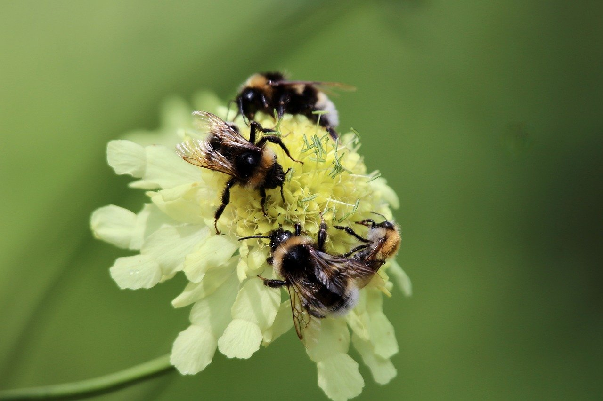

Bichito de la semana

Abejorro Común (Bombus terrestris)
Es un insecto robusto y peludo, fácilmente reconocible por sus franjas negras y amarillas. Vive en colonias pequeñas, normalmente bajo tierra, y visita muchas flores a diario. Con su vuelo zumbante y energético, es uno de los polinizadores más importantes de jardines y cultivos.
Acerca de...
Preguntas frecuentes
En palabras simples, no, las arañas no son insectos. Una forma fácil de diferenciarlas es el
número de patas: si tiene 8 patas es una araña, si tiene 6 es un insecto.
No, en general los cucarrones no son peligrosos para las personas.